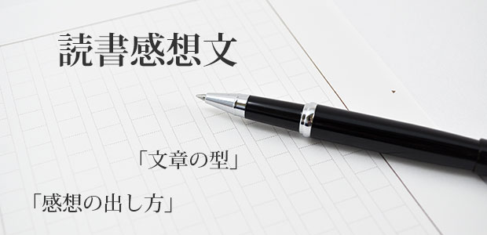

夏休みに入りましたね。学校がお休みのこの1ヶ月、小学生から大学生まで、みんな大好きな夏休みです。毎日好きなことをして遊べるこの期間ですが、一つだけ憂鬱なものがあるとすれば、それは宿題。中学校に入ると問題集やドリルが中心になりますから、やることはとても明確になります。しかし、小学生の場合には「自由研究」と「読書感想文」という二つの巨大な関門が待ち受けています。
今でこそ文章を書くのが得意ではありますが、私自身実を言うと特に読書感想文が大嫌いでした。普段読んでいる“楽しい本”とは全く違う、“まじめな”小説を読まされて、その上感想まで書かなければいけないというのは、かなりつらいのです。ひょっとしたら保護者の方の中にも、子供が読書感想文をいやがっているのを見て「なんとかしなければ」と感じている人がいるかもしれません。
読書感想文を書く際の「やり方」は数多くあります。しかし、根本的な問題はやり方ではなく、「感想それ自体」が子供たちの中に特にない、ということでしょう。一般的にそのような場合には「思ったことをなんでもいいから書いてごらん」などと大人はアドバイスしますが、子供たちの中には本当に「なにもない」場合が多いのです。「おもしろかった」「つまらなかった」という程度のものはあるでしょうが、たいていの場合「つまらなかった」で終わってしまいます。でも、つまらなかったと一言だけ書いて終わりにするのはとても勇気がいりますね。まず間違いなく先生にしかられて、書き直しを命じられることでしょう。かくして子供たちは「思ってもいないこと」をでっち上げることになるわけですが、これはもはや一から論文を書いているのと変わりはありません。
もう一つの問題は、文章技法です。大人が文章をスラスラ書くことができるのは、そのシチュエーションにフィットした文章の「型」をたくさん持っているからです。そのため、「型」をすでに知っている仕事の報告書は簡単にかけます。でも、いきなり「詩」を書け、と言われれば必ず子供と同様とまどい、見るも無惨なものができあがるハズです。ですから、保護者の方は、子供が書いた、大人の目から見れば支離滅裂な文章を見ても特に気にする必要はありません。書けなくて当たり前なのです。
文章を書くというのは高度な訓練を要求される作業であり、感想を出すのはそれに輪をかけて高度なテクニックを必要とします。「こどもならではのみずみずしい感性を壊さないように」「自発的に」「思ったことをそのまま」と言う先生もいらっしゃいますが、私はその意見には明確に反対です。たとえばテニスの試合をするというのに、ルールも知らず、ひたすら無軌道にラケットを振り回しているだけでは、テニスのおもしろさを感じることはまず不可能でしょう。そして、ラケットを振り回す行動も完全に無意味です。
ですから、お子さんが読書感想文に困っていたら、「子供の自由な発想」や「感性」など投げ捨てて是非全力で介入してあげてください。たとえばお父さんお母さんが一度簡単に感想文を書いてみて、それを写させるのもよいでしょう。筆写の課程で子供が「ここは自分が思っているのとは少し違うな」と思うところがあれば書き加えさせていきます。そうしてお父さんお母さんの「お手本」を写しながら型を覚えていくのは、画家の模写訓練に似ています。作家を志望する大人でも実際に自分の好きな作家の文章を丸写しして、文の適切な長さや修飾語句の使い方、段落校正を学びます。
このようなお話をすると「子供の手助けをしては、ズルをするようでよくないのではないか」とおっしゃる方が多くいます。しかし、読書感想文はあくまで教育の一環であり、その目的は「芸術作品を独力で作り上げる」ことにあるのではありません。感想も文章の型もない子供にとりあえず字を書かせてデタラメなものを作り上げるよりも、この期をとらえて「感想の出し方」と「文章の型」を教える方が目的に叶うでしょう。そのついでに、親子で同じ本を読むことで話のネタも増えますよ。ぜひ試してみてくださいね。